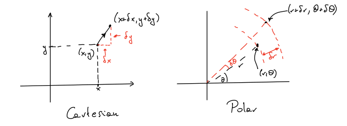
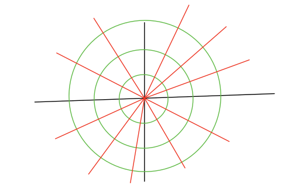
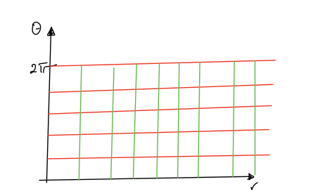
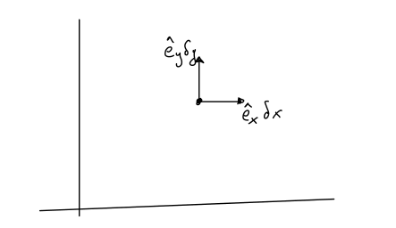
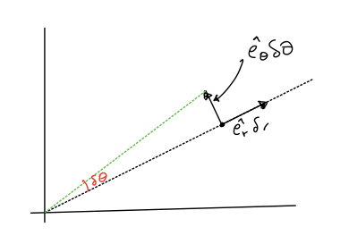
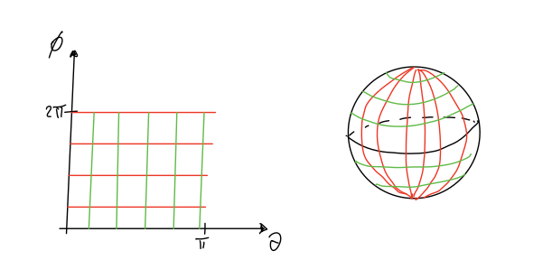
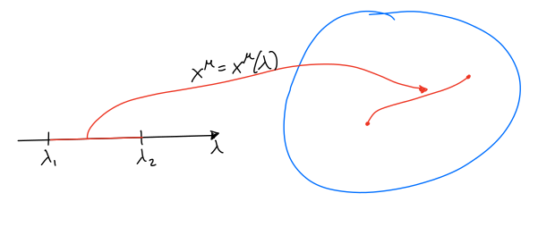

3. Week 3¶
3.1. Tensor calculus¶
In Special Relativity: inertial frames are related by Lorentz transformations
{kind=link}
Coordinate transformations induce transformations on the components of four-vectors and tensors. For example, a four-vector with components \(v^\mu\) in the \(x^\mu\)-coordinates has components
in the \(x'^\mu\)-coordinates. Similarly, a covector \(\omega_\mu\) transforms via
such that the contraction \(v^\mu\omega_\nu\) is invariant, i.e. \(v'^\mu\omega'_\mu=v^\mu\omega_\mu\):
When tensors with more indices are considered, they transform with one factor \(\Lambda^\mu_{\,\,\nu}\) for each upper index and one factor \((\Lambda^{-1})^\kappa_{\,\,\nu}\) for each lower index.
As a simple example, let us take a rank-2 covariant tensor \(T_{\mu\nu}\). Then
This in particular implies that the combination \(T^\mu_{\,\,\nu}v^\nu\) transforms as a vector under Lorentz transformations (if \(v^\mu\) is a vector).
Importantly, in Special Relativity:
the matrix \(\Lambda^\mu_{\,\,\nu}\) does not depend on position
the Lorentzian metric
\[\begin{split} \eta_{\mu\nu}=\begin{pmatrix}-1&0&0&0\\0&1&0&0\\0&0&1&0\\0&0&0&1\end{pmatrix}\end{split}\]is invariant under Lorentz transformations:
These two features will no longer be true when we generalise to general coordinate trnasformations.
3.2. General coordinate transformations¶
We would like to write the laws of physics in a way that makes no reference to the choice of coordinates used to parametrise space-time. This requires tensor calculus in general coordinate systems.
Let us consider a simple example of two-dimensional polar coordinates
{kind=link}
In standard Euclidean geometry the distance \(\delta s^2\) between the nearby points can be calculated as:
Writing \(x^1=x\) and \(x^2=y\) this is
A natural question is what happens if we try to rewrite this expresions in \((r,\theta)\) polar coordinates? To do that, we can use the chain rule to find:
This can be equivalently written using matrix notation as:
If we now write \(x'^{1}=r\) and \(x'^{2}=\theta\), then the infinitesimal distances along each directions can be related in the two coordinate systems:
Using the exact expressions for polar coordinates:
this leads to the following relation:
If we denote by \(J=\begin{pmatrix}\cos\theta&-\sin\theta\\\sin\theta&\cos\theta\end{pmatrix}\) then we can write
It is not the flat metric in \((r,\theta)\)-variables because of the \(r^2\) term in front of \(\delta \theta^2\). In index notation this can be written as:
with \((g'_{ij})=\begin{pmatrix}1&0\\0&r^2\end{pmatrix}\). Importantly, components of this matrix depend on position!
Finally, let us note that:
We can give an interpretation to the calculations above. We are used to thinking of polar coordinates like this:
{kind=link}
But we could simply look at a plane with axes
{kind=link}
This also describes the geometry of the usual \((x,y)\) plane so long as we use \(\delta s^2=\delta r^2+r^2\delta\theta^2\) to define the notion of distance (the metric)!
In any coordinates we can write \(\delta s^2=g_{ij}\delta x^i\delta^j\), where we call \(\delta s^2\) the line element and \(g_{ij}\) are the components of the metric tensor.
If we now consider two sets of general coordinates \(x^i\) and \(x'^i\) then a change of coordinates can be written in general form as:
and
3.2.1. Vectors¶
In Cartesian coordinates we have the usual basis vectors \(\hat{e}_x\) and \(\hat{e}_y\):
{kind=link}
If we increase the \(x\)-coordinate by \(\delta x\) then we need to move by vector \(\hat{e}_x \delta x\). Can we do the same thing in polar coordinates?
{kind=link}
As before, if we increase \(r\) by \(\delta r\) then we need to move along the vector \(\hat{e}_r\) by \(\hat{e}_r\delta r\). Similarly, if we increase the \(\theta\) coordinate. The relation between the two pictures is:
Given a vector \(\underline{v}\) at the point \((x,y)\) (or polar coordinates \((r,\theta)\)) we can expand it either in terms of \(\hat{e}_x\) and \(\hat{e}_y\), or in terms of \(\hat{e}_r\) and \(\hat{e}_\theta\):
which in the matrix form is
or in the index notation:
Importantly, the matrix \(\frac{\partial x^i}{\partial x'^j}\) depends on where the vector is located! This is because e.g. \(\hat{e}_r\) is not always pointing in the same direction (in terms of \(\hat{e}_x\) and \(\hat{e}_y\)).
In Special Relativity, the coordinate transformation was linear:
This was why the tensor transformation matrix \(\Lambda^\mu_{\,\,\nu}\) was constant. For general (non-linear) coordinate transformations \(\Lambda^\mu_{\,\,\nu}\) is replaced by \(\frac{\partial x'^\mu}{\partial x^\nu}\) which depends on position.
Note that
so \(\frac{\partial x^\mu}{\partial x'^\nu}\) and \(\frac{\partial x'^\mu}{\partial x^\nu}\) are inverses. In other words, if we want to invert the the vector transformation formula (3.1) then we get
If we have \(v^\mu(x)\) and \(v'^\mu(x')\) satysfying the formula above, then \(v^\mu(x)\) is a vector field.
As a simple example, let us consider a two-sphere in \(\mathbb{R}^3\) with radius \(R\). We will use spherical polar coordinates \((\theta,\phi)\) (there are two coordinates as this is a two-dimensional surface).
{kind=link}
Now we want to ask the question: what is the metric in the left pictures which corresponds to the usual notion of distance in the right picture?
We start from a three-dimensional Euclidean space with line element \(\delta s^2=\delta x^2+\delta y^2+\delta z^2\) and use the explicit form for the transformation to spherical coordinates:
Then
and
In other words:
is the metric that we were looking for.
3.2.2. Tensors¶
Other tensor fields follow the same pattern as in special relativity. Let \(x^\mu\) and \(x'^\mu\) be two different sets of coordinates on (a patch of) spacetime. As they are both sets of coordinates, we can write
which means that \(x'^\mu\) is some function which gives \(x'^\mu\) for a given point if we know \(x^\mu\) for it. Then the inverse function \(x^\mu\) gives \(x\) from \(x'\).
As a familiar example let us take the two-dimensional Euclidean space parametrised with \((x,y)\) or \((r,\theta)\) and then these functions are:
We can then construct the matrices:
These are position dependent in general and inverse to each other.
Definition of a vector
A quantity which has components \(V^\mu(x)\) with respect to the coordinates \(x^\mu\) and components \(V'^\mu(x')\) with respect to the coordinates \(x'^\mu\) is called a vector if
{kind=link}
We know \(x'^\mu\) as functions of the \(x^\mu\), we can therefore find \(\frac{\partial x'^\mu}{\partial x^\nu}\) by differentiation. Evaluating this at the point \(x_0^\mu\) gives a matrix \(M^\mu_{\,\,\nu}=\frac{\partial x'^\mu}{\partial x^\nu}\Big|_{x_0}\). This matrix transforms the components of a vector at the point \(x_0\) in the two coordinate systems as
Definition of a vector field
If \(V^\mu(x)\) are smooth functions of \(x^\mu\), and \(V'^\mu(x')\) are smooth functions of \(x'\) such that
then \(V\) is called a vector field.
Other tensor fields are defined similarly
Definition of a covector
An object with components \(\omega_\mu\) and \(\omega'_\mu\) in the same setup as above is a covector field (or 1-form field) if
Note that the covector field transform with the inverse of the matrix for the vectors.
With these definitions, the contraction \(V^\mu\omega_\mu\) is invariant: \(V'^\mu\omega'_{\mu}=V^\mu\omega_\mu\), it is a scalar field.
Exercise
Check that \(v^\mu\omega_\mu\) is invariant.
Important example: given a scalar field \(\phi(x)\), the partial derivatives \(\partial_\mu \phi=\frac{\partial\phi}{\partial x^\mu}\) are a covector. Proof:
Therefore, given a vector \(V^\mu\), the derivative of \(\phi\) along \(V^\mu\), that is \(V^\mu\partial_\mu\phi\) is a scalar field.
Definition of a tensor
\(T^{\mu_1\ldots\mu_m}_{\nu_1\ldots\nu_n}\) is a tensor if
The general philosophy is that only tensor quantities are physically meaningful since we want to describe physics in a coordinate invariant way.
Important
Tensor equations are true in all coordinate systems if they are true in any one.
Some tensors can have components which are invariant. For example
is invariant since
This is the same reason why \(V^\mu \omega_\mu\) is invariant!
3.3. Symmetry and antisymmetry¶
We can symmetrise or anti-symmetrise indices on the same level. For example, given a tensor \(T_{\mu\nu}\) we can define two new tensors:
which are the anti-symmetric and symmetric combinations of the tensor \(T_{\mu\nu}\).
We have the following simple properties of the new tensors:
Furthermore, any tensor can be decomposed
We call the tensor \(A_{\mu\nu}\) the antisymmetrisation of \(T_{\mu\nu}\) and the tensor \(S_{\mu\nu}\) the symmetrisation of \(T_{\mu\nu}\).
There are more complicated examples that we can construct if we have tensors with more indices. For example:
We can also define an (anti)-symmetrisation of more than two indices. For example:
If we set \(A_{\mu\nu\lambda}=X_{[\mu\nu\lambda]}\) and \(S_{\mu\nu\lambda}=X_{(\mu\nu\lambda)}\) then \(A_{\mu\nu\lambda}=-A_{\nu\mu\lambda}\) and \(S_{\mu\nu\lambda}=S_{\nu\mu\lambda}\).
Note
If we antisymmetrise a symmetric tensor, we get zero. Also, if we contract symmetric indices with antisymmetric indices then the answer is zero!
For example: if \(A_{\mu\nu}^{\lambda}=A_{[\mu\nu]}^{\lambda}\) and \(B^{\mu\nu\lambda}=B^{(\mu\nu\lambda)}\) then \(B^{\mu\nu\lambda}A_{\nu\lambda}^\kappa=0\).
Moreover, if we antisymmetrise the indices of a tensor that is already symmetric in these indices then we also get zero. For example, of \(g_{\mu\nu}=g_{(\mu\nu)}\) the \(g_{\mu\nu}=\frac{1}{2}\left(g_{\mu\nu}-g_{\nu\mu}\right)=\frac{1}{2}\left(g_{\mu\nu}-g_{\mu\nu}\right)=0\).
We conclude this section with an important statement that will be used later in these lectures:
Important theorem
If we have \(A\cdot B=C\) where \(C\) is a tensor for any tensor \(B\) then this implies that \(A\) is a tensor.
3.4. Metric tensor¶
A rank-two covariant tensor \(g_{\mu\nu}\) can define a metric tensor if it satisfies the folllowing two properties:
it is symmetric \(g_{\mu\nu}=g_{\nu\mu}=g_{(\mu\nu)}\)
it is non-degenerate \(\det g_{\mu\nu}\neq0\)
We can then define a line element
which gives a notion of distance on a coordinate system. The small coordinate shift \(dx^\mu\) defines a vector as
and therefore the contraction \(ds^2=g_{\mu\nu}(x)dx^\mu dx^\nu\) is a well-defined scalar giving an invariant notion of the length of the displacement.
To be more precise, we should also insist that \(g_{\mu\nu}\) has fixed signature, that is the same number of positive and negative eigenvalues everywhere. For Euclidean geometries, length is always positive so all eigenvalues are positive. In relativity, we want the eigenvalues to have signs \((-,+,+,+)\).
The requirement \(\det(g_{\mu\nu})\neq 0\) implies that the inverse matrix exists, which gives a tensor written as \((g^{-1})^{\mu\nu}=g^{\mu\nu}\). Since \(g^{\mu\nu}g_{\nu\lambda}=\delta^\mu_{\,\,\nu}\), then \(g^{mu\nu}\) is also a tensor.
As in Special Relativity, we can raise and lower indices with \(g_{\mu\nu}\) and \(g^{\mu\nu}\). For example: if we have \(T_{\mu\nu}\) then \(T^{\mu}_{\,\,\nu}=g^{\mu\lambda}T_{\lambda\nu}\), and similarly we have for example \(X_{\mu\nu\lambda}=g_{\mu\kappa}X^\kappa_{\,\,\nu\lambda}\). Because \(g_{\mu\nu}\), \(g^{\mu\nu}\) and \(T_{\mu\nu}\) are tensors then also \(T^{\mu}_{\,\,\nu}\) defines as a contraction is also a tensor.
3.5. Finite distances/intervals¶
Suppose we have a (curved) path with parameter \(\lambda\):
{kind=link}
Given a metric tensor \(g_{\mu\nu}\) we define the infinitesimal length of \(dx^\mu\) to be \(ds=\sqrt{|g_{\mu\nu}(x)dx^\mu dx^\nu|}\). For a timelike path \(ds^2<0\) along the path so \(ds=\sqrt{-g_{\mu\nu} dx^\mu dx^\nu}=d\tau\). For a spacelike path \(ds^2>0\) so \(ds=\sqrt{g_{\mu\nu} dx^\mu dx^\nu}\).
Then we define the length/interval along the paths
where \(\dot{x}^\mu=\frac{dx^\mu}{d\lambda}\).
Exercise
Show that if we choose a different parameter \(\tilde\lambda\) then we get the same answer for \(S\).
Exercise
Say \(y^\mu=x^\mu+\epsilon\,\zeta^\mu(x)\) such that \(g_{\lambda\kappa}(y)\frac{\partial y^\lambda}{\partial x^\mu}\frac{\partial y^\kappa}{\partial x^\nu}=g_{\mu\nu}(x)\). Show that